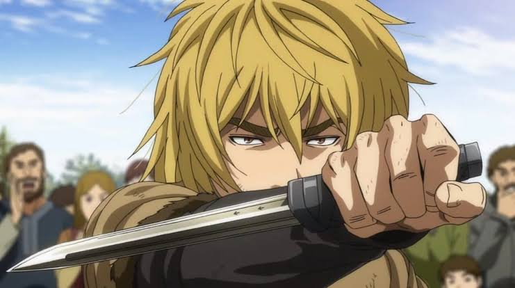
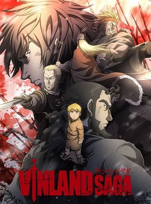

Ambientada no século XI, durante o ápice da Era Viking na Europa, Vinland Saga acompanha a vida de Thorfinn Karlsefni. Criado em meio a saques e conflitos sangrentos entre dinamarqueses e ingleses, o jovem é movido pelo desejo visceral de vingança após uma tragédia familiar. No entanto, sua jornada ultrapassa o sangue das batalhas para se tornar uma reflexão profunda sobre o custo da violência, a busca por redenção e o sonho de encontrar 'Vinland' — uma terra próspera no oeste onde a guerra e a escravidão não existem.



© Projeto de front-end acadêmico de Tiago Almeida de Abreu baseado no mangá e anime de Makoto Yukimura. Todos os direitos reservados aos estúdios e autores originais.